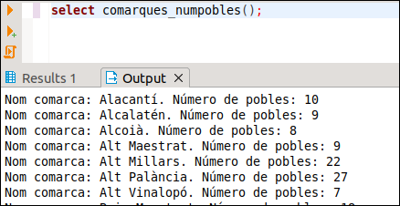
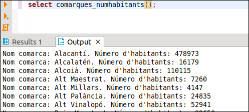

6. Utilització de cursors
Un cursor és una variable que ens permet desplaçar-nos per les files d’una consulta de SQL.
Hi ha dos tipus de cursors, els explícits i els implícits.
Els explícits s'han de declarar expressament en la zona de declaracions. Els implícits no, seran únicament una sentència SQL que guarda el resultat en una variable. Porten implícita tota la mecànica dels cursors (declarar, obrir, utilitzar, tancar) que haurem de fer en els explícits.
CURSORS IMPLÍCITS
Consistiran en una sentència SQL dins d'un procediment o funció PL/pgSQL. Han de tornar només un valor (només una fila), i es guardaran en una variable per mig del INTO de la sentència SQL. Per exemple, la següent funció tornarà el número de poblacions.
CREATE FUNCTION quantes() RETURNS INTEGER AS '
DECLARE
N INTEGER;
BEGIN
SELECT COUNT(*) INTO N FROM POBLACIONS;
RETURN N;
END;
' LANGUAGE plpgsql;
SELECT quantes();
Però ara ho fa per l'eixida normal
CURSORS EXPLÍCITS
Aquestos cursors s'han de declarar, bé en la zona de declaracions, bé en el moment d'obrir-los, com veurem més avant. I en la zona d’instruccions, primer haurem d’obrir (OPEN) el cursor (que és quan es farà la consulta SQL, guardant-se en una zona de memòria i quedant-se situat el cursor en la primera fila). Després ens anirem desplaçant fila a fila per fer un determinat tractament (FETCH : torna el valor i se situa a la següent fila). Per últim l’haurem de tancar (CLOSE).
En la declaració del cursor seguirem la següent sintaxi:
_nom_ CURSOR [_paràmetres_] {FOR | IS} _sentència_select_
Encara que també tenim la possibilitat de definir-lo únicament com a refcursor (referència a cursor), sense dir quina és la sentència select. Aleshores l'haurem de definir en el moment d'obrir-lo. També tenim la possibilitat de passar-li un paràmetre. Ací tenim alguns exemples de definició de cursors:
DECLARE
cur1 refcursor;
cur2 CURSOR FOR SELECT nom,altura FROM POBLACIONS;
cur3 CURSOR(p1 varchar) FOR SELECT nom,altura FROM POBLACIONS WHERE nom=p1;
La manera d'obrir-lo depèn de la manera com s'havia declarat. Si només s'havia posat refcursor s'haurà de col·locar la consulta. Si tenia paràmetres s'hauran de posar entre parèntesi. Aquesta seria una manera d'obrir els 3 cursors definits anteriorment:
BEGIN
OPEN cur1 FOR SELECT * FROM POBLACIONS;
OPEN cur2;
OPEN cur3('Vistabella');
....
END;
Hi ha una altra manera d'obrir els cursors definits com a refcursor , que permet especificar la consulta totalment en temps d'execució. Ací en tenim un exemple:
s := 'SELECT nom FROM ' || $1;
OPEN cur1 FOR EXECUTE s;
on la taula consultada ve donada com a paràmetre de la funció.
Per accedir als distints camps de les successives files del cursor ho farem per mig de la sentència FETCH cur INTO var1 [, var2, ...] i aleshores tindrem els valors disponibles en les variables var1 (, var2, ...) que estaran prèviament declarades del mateix tipus. Així en l'exemple de dalt, tenim que el cursor cur2 està definit en base a una sentència SQL que torna dues columnes (nom i altura). La sentència hauria de ser
FETCH cur2 INTO v_nom, v_altura
on v_nom i v_altura serien respectivament de tipus varchar i numeric
També podríem haver definir una variable de tipus RECORD. En aquest exemple suposem que la variable f és de tipus RECORD
FETCH cur2 INTO f
Després, per a accedir a un camp, posarem f.nom_camp.
Per a tancar el cursor utilitzarem la sentència CLOSE.
L'habitual serà recórrer tot el cursor. El següent exemple trau tots els noms de les poblacions d'una comarca introduïda com a paràmetre de la funció, utilitzant un cursor:
CREATE FUNCTION pobl_com(text) RETURNS void AS $cos$
DECLARE
v_nom VARCHAR;
cur CURSOR FOR SELECT nom FROM POBLACIONS
WHERE nom_c = $1
ORDER BY nom;
BEGIN
OPEN cur;
FETCH cur INTO v_nom;
WHILE v_nom IS NOT NULL LOOP
RAISE NOTICE '%',v_nom;
FETCH cur INTO v_nom;
END LOOP;
CLOSE cur;
END; $cos$
LANGUAGE plpgsql;
La manera d'utilitzar aquesta funció serà:
SELECT pobl_com('Plana Alta');
Per a aquestes ocasions en les quals hem de recórrer totalment un cursor, tenim una variant del FOR que ens serà molt útil.
FOR var_fila IN sentència_select LOOP
on var_fila és una variable de tipus RECORD , i que anirà agafant els valors de les diferents files (fixeu-vos que s'ha de declarar, en contra de les variables comptador d'un bucle FOR normal). Hem d'observar que en el cas del bucle FOR hem de declarar la sentència SELECT en el mateix moment de crear el FOR, és a dir, no podem utilitzar un cursor definit en la zona de declaracions.
Quan utilitzem el bucle FOR per a recórrer un cursor no caldrà fer l'acció d'obrir, ni de situar-nos al següent, ni de tancar, ja que es fan de forma implícita en el bucle. Reconstruïm l'exemple anterior:
CREATE FUNCTION pobl_com_2(text) RETURNS void AS $cos$
DECLARE
f RECORD;
BEGIN
FOR f IN SELECT nom FROM POBLACIONS
WHERE nom_c = $1
ORDER BY nom
LOOP
RAISE NOTICE '%',f.nom;
END LOOP;
END;
$cos$ LANGUAGE plpgsql;
Si volguérem construir la sentència SELECT en temps d'execució, posaríem EXECUTE, encara que açò potser siga massa avançat per a aquest curs:
FOR f IN EXECUTE 'SELECT nom FROM ' || $1 LOOP
Anem a veure un exemple. Volem calcular la MEDIANA de l'altura de les poblacions. La mediana es defineix com el valor que està al mig de tots si el número d’elements és imparell (1, 2, 3 , 4, 10), i com la mitjana entre els dos valors centrals si el número és parell (1, 2, 3 , 4 , 10, 20) -> 3’5 , tenint en compte sempre que han d'estar ordenats. És suficient amb que entengueu el seu funcionament.
CREATE OR REPLACE FUNCTION MEDIANA() RETURNS NUMERIC AS $cos$
DECLARE
cur CURSOR FOR SELECT altura FROM POBLACIONS
ORDER BY altura;
aux INT2;
aux1 INT2;
i INT2;
n INT2;
n1 INT2;
BEGIN
OPEN cur;
SELECT COUNT(altura) INTO n FROM POBLACIONS;
IF MOD(n,2) = 0
THEN n1 := n;
ELSE n1 := n+1;
END IF;
FOR i IN 1..n1/2 LOOP
FETCH cur INTO aux;
END LOOP;
IF MOD(n,2) = 0 THEN
FETCH cur INTO aux1;
aux := (aux + aux1) / 2;
END IF;
RETURN aux;
END;
$cos$ LANGUAGE plpgsql;
SELECT MEDIANA();
 Exercicis
Exercicis
Ex_7 - Fes una funció anomenada POBLACIONS_ALTES que accepte 2 paràmetres, el primer de tipus text que serà una comarca, i el segon numèric que serà una altura. Ha de traure les poblacions de la comarca del primer paràmetre que són més altes que el segon paràmetre. Mostrarem el nom de la població i l'altura. Aquest podria ser el resultat en executar-se:

Ex_8 - Fes una funció anomenada COMARQUES_NUMPOBLES sense paràmetres que traga per pantalla les comarques ordenades alfabèticament amb el número de pobles de cadascuna

Ex_9 - Fes una funció anomenada COMARQUES_NUMPOBLES_NUMINSTITUTS sense paràmetres que traga per pantalla les comarques ordenades alfabèticament amb el número de pobles de cadascuna i el número d'instituts. En la consulta tindrem dos dificultats:
- Hem d'agafar totes les poblacions, fins i tot les que no tenen institut
- Com que hem d'accedir als instituts, per a comptar els pobles haurem de comptar els pobles distints , i així si un poble té més d'un institut, no comptar-lo més d'una vegada

Ex_10 - Fes una funció anomenada NUM_HABITANTS_COMARCA que accepte un paràmetre de tipus text, i torne el número d'habitants d'eixa comarca

Ex_11 - Fer la funció COMARQUES_NUMHABITANTS sense paràmetres per a traure per pantalla totes les comarques i el número d'habitants. En la consulta has d'utilitzar obligatòriament la funció anterior

Llicenciat sota la Llicència Creative Commons Reconeixement NoComercial CompartirIgual 3.0